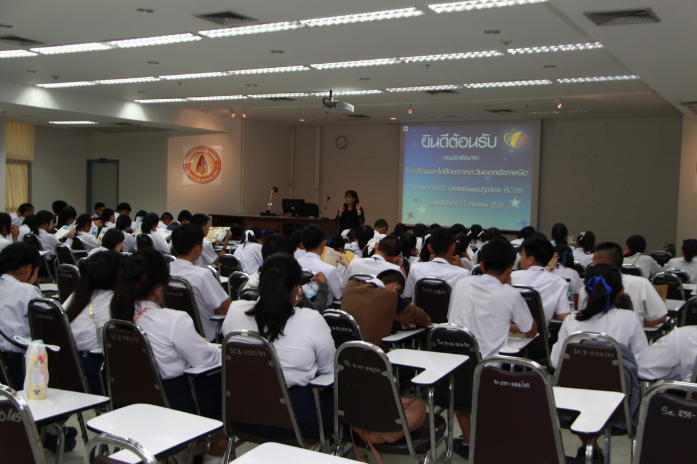

ข่าวนักเรียน
คณะวิทยาศาสตร์ มข แนะแนวการศึกษา ให้กับน้องๆโรงเรียนมหาไถ่ศึกษาภาคตะวันออกเฉียงเหนือ

เมื่อวานนี้(11กันยายน2557) เวลา13.30-14.30 น. คณะวิทยาศาสตร์ มหาวิทยาลัยขอนแก่น ให้การต้อนรับคณะนักเรียน ชั้นมัธยมศึกษาปีที่ 5 จากโรงเรียนมหาไถ่ศึกษาภาคตะวันออกเฉียงเหนือ จำนวน 118 คน ณ ห้อง 8103 อาคาร SC.08 มี นายสุชาติ เทพภูเขียว นักวิชาการโสตทัศนศึกษา นายธนากร โคธิเสน เจ้าหน้าที่บริหารงานทั่วไปเป็นพิธีกร กล่าวต้อนรับ ต่อมาได้มีการฉายวีดิทัศน์แนะนำคณะวิทยาศาสตร์เป็นข้อมูลเบื้อต้น ต่อมา นางสาวกฤตวรรณ วัฒนสุวกุล นักวิชาการศึกษา งานบริการการศึกษา ได้แนะนำหลักสูตร วิธีการรับเข้าศึกษาต่อในคณะวิทยาศาสตร์ ทุนการศีกษา พร้อมตอบข้อซักถาม ซึ่งน้องๆให้ความสนใจเป็นอย่างดี ภายหลังการบรรยายได้มีการมอบขงที่ระลึกและถ่ายภาพร่วมกัน ก่อนเดินทางไปยังคณะอื่นๆต่อไป